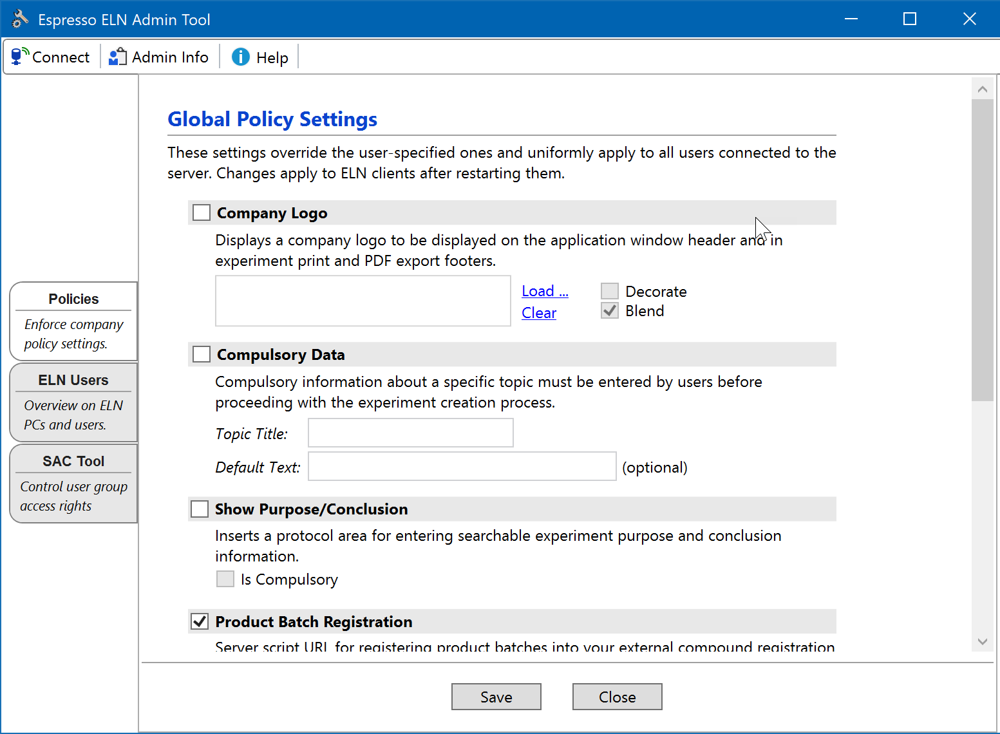
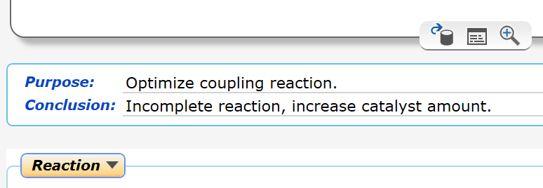
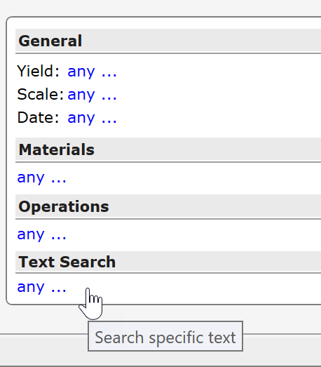
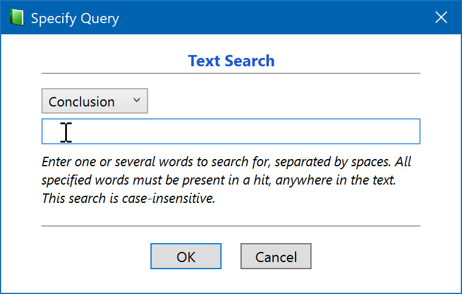

Policies Section
ELN Policies
The Policies section is only visible to the administrator. The admin tool policy settings specified here always override the local ones.

All settings only become effective after clicking Save button at the bottom of the tool. Some settings are propagated to the ELN clients during their next server synchronization (occurring every 10 minutes).
Company Logo
Espresso ELN can be personalized with a company logo appearing in the header of the application window, as well as in the footer of all PDF exports and print documents. See the Company Logo topic for more details on the display options.
Enforce Version
In organizations where users themselves are responsible for updating their software, a range of Espresso ELN client versions may be in use, resulting in different functionalities and bug fix levels across the user community: Some users may always update to the latest versions (as highly recommended), whereas others rarely do. In order to unify the Espresso ELN versions in use, the administrator can enforce a minimum application version. If a user launches a client with a lower version, he is asked to upgrade to the desired version and the application quits. The minimum version should be updated regularly; the 'get current' link next to the version boxes in the server Admin Tool supports this by retrieving the most recent version number available. Please note that this option can be modified by the administrator only and is displayed in the settings dialog for information only.
Show Purpose & Conclusion
Activate this policy if a place for entering searchable information about purpose & conclusion of an experiment is desired. When active, this will insert the panel below into every experiment protocol (shown here with sample data):

Checking the Is Compulsory checkbox enforces user input for both the Purpose and the Conclusion field before finalizing an experiment. This option is only available if the parent 'Show Purpose and Conclusion' checkbox is checked.
Purpose & Conclusion data are searchable via Text Search of the Search section (see below).
Please note that you need to restart the application after modifying this setting for updating the protocol area of all currently open experiments accordingly. When switching this option off, experiments already containing purpose & conclusion data will continue to display them.
Enforce Compulsory Data
Some national regulations or company policies may require users to enter information about a specific topic for each experiment (e.g. for providing a safety assessment). The 'Enforce Compulsory Data' section of the settings dialog (see introduction screenshot above) provides a flexible way for responding to such requirements:
- Topic Title: Enter a title for your specific requirement, e.g. 'Safety Assessment'
- Default Text: This is optional. The specified text will appear by default in the input field of the compulsory data dialog (see below). It must be modified by the user to be recognized as valid entry.
If compulsory data are activated, then the dialog below will appear during the creation of every new experiment, either after specifying the reaction sketch, or when cloning an experiment. Users only can proceed after entering some text or after modifying the (optional) default text.

After entering the compulsory text in above dialog, a panel containing the compulsory data is inserted between the sketch area and the first experiment section. Its contents can be re-edited by left-clicking the text area.

Compulsory Data are searchable via Text Search of the Search section (see below).
Shared Analytics Folder Path
Specifying the path to a shared analytics folder allows to establish Analytics Requests. Note that migrating shared folders already in use require special precautions - please refer to to the comments in the Policies Section topic.
Long Term Archive (LTA) Settings
This policy allows to specify the connection parameters, the activation and the license code of the Espresso LTA infrastructure.
Check the Long Term Archive (LTA) checkbox and enter the credentials for the user LTA access account created when setting up the LTA database. The server port 3306 usually can be left as is:

Click the blue Test Connection link to test the specified connection settings and correct them if required. Finally click the Save button at the bottom of ELN Admin Tool to save your settings, which also activates the LTA services during the next client synchronizations.
Initially, totally 150 experiments can be archived for evaluation. Click the Activate License link to enter a purchased activation code for unlocking the archival of an unlimited number of experiments. Or click the Reset link in the header area, if you’d like to discontinue using the LTA (this will cause the LTA icon to disappear from the client header). In case of server maintenance work, LTA connections can be paused temporarily by un-checking the checkbox in the LTA header.
Batch Registration script URL
Specifying the URL to a custom batch registration server script allows the direct interaction of the ELN with your third party batch (sample) registration system, provided that it exposes a publicly accessible API (see Product Registration Script and Product Registration). This URL must be of the form of e.g. 'https://myDomain.com/scripts/myScript.php', usually this will point to the same server location your registration system resides on. Standard file paths and shared drive locations are not supported.
Show Unfinalized
Activating this option provides read-only access also to unfinalized experiments of other server users. Scenarios in which this may be applicable include the situation where others need to continue the work of a colleague being unable to arrive at work that day. Or an organization wants to share experiments already at the conceptual stage for a discussion on their setup.
Activating this option affects following application locations: In the Schemes section, the 'private' placeholder elements are replaced by the actual unfinalized content, and the reaction arrow dropdown menus also contain unfinalized experiments; in the Summary section the experiment lists now also contain unfinalized experiments; the same is true for the Search results. Finally, also the 'Get Experiment' functionality allows the read-only access to unfinalized server experiments.
However, it is generally not recommended to include unfinalized experiments in the search and summary results, since the information on experiments in progress is not indicative on their finalized content and therefore can be misleading. - Also note that if an unfinalized experiment is blocked by Server Access Control (SAC) settings, it remains blocked even when 'Show Unfinalized' is activated.
Searching Additional Information
When policies providing additional protocol input fields are activated (e.g. Compulsory Data or Purpose & Conclusion), the Search section of Espresso ELN adapts by extending its query options by a section titled 'Text Search'.

Clicking its 'any ...' link opens the text query dialog, which allows to search text for specific policy fields:

This search is 'Google-type'. When several words are entered, all of them must be present anywhere in the target to provide a hit, i.e. not necessarily in exactly the sequence entered.